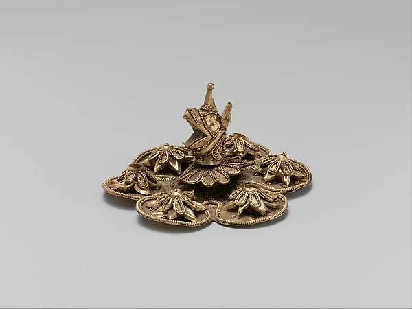

Grifon, farklı kültürlerde değişen biçimleriyle, kuş ve büyük kedinin özelliklerini birleştiren melez bir varlıktır. Bu ekran tek bir köken iddiası yerine, belgelenmiş birkaç nesnenin izini sürer.
KAYIT 02 / MÖ YAKLAŞIK 630–620
Bir baş, bir rozet.
Altın · Arkaik dönem · Yunan, olasılıkla Rodos

The Metropolitan Museum of Art · 12.229.24 · Açık erişim / CC0
Grifon başlı altın rozetin hangi amaçla kullanıldığı kesin değildir. Müze kaydı, kumaş ya da deri üzerine dikilmiş olabileceğini belirtir. Küçük bir nesne, melez bedenin yalnızca başını taşır.
The Metropolitan Museum of Art · 54.3.2 · Açık erişim / CC0
Bu levhada iki boynuzlu, kanatlı aslan-grifon karşı karşıya yükselir. Arka yüzdeki halkalar, süslemenin deri bir kemere takılmış olabileceğini düşündürür. Grifon burada sabit bir anatomi değil, birleşen özelliklerin düzenidir.
Antik Yunan anlatılarında grifonlar altınla ve uzak coğrafyalarla ilişkilendirilir. Met’in İskit sanatı araştırması bu anlatılar ile Karadeniz çevresindeki kültürel karşılaşmalar arasındaki ilişkiyi ele alır.
Sanatçının çağdaş grifonu, bugünün beş sorununu tek bir bedende bir araya getirir. Molokun kuyruğu, çitanın gövdesi, hamam böceğinin kanatları, kuzgunun başı ve gorilin gözleri aynı varlığın parçaları olur.
2076 burada belgelenmiş bir buluntu tarihi değildir. Eserin kurduğu gelecektir. Grifon, geçmişin melez bedenini günümüzün açık verileriyle birlikte taşır. Dışarıdaki değişim, bu bedenin küçük bir parçasında karşılık bulmayı bekler.
KAYIT 07 / BEŞ KARAKTER
Tek beden.
Kuraklık / tüketim / radyasyon / bilgi / insani değerler
Veriler dünyayı bütünüyle temsil etmez. Ölçüm, model ve haber kaydı farklı şeylerdir. Her kanal kendi kaynağını, zamanını ve sınırını gösterir. Heykelin bekleyişi, görünmeyeni kesin bildiği anlamına gelmez.